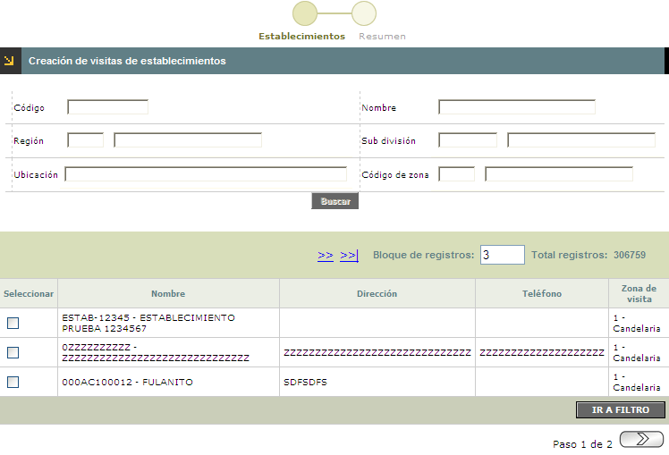
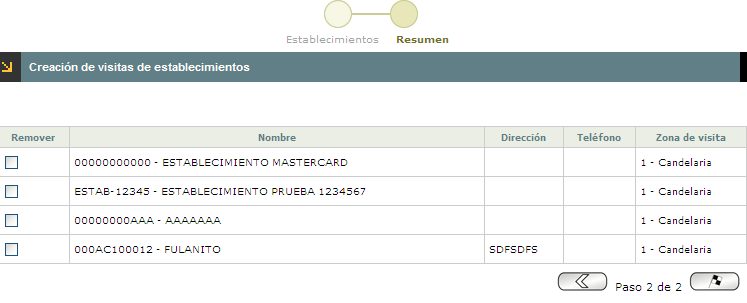

|
Creación de visitas de establecimientos |
Cuando el usuario selecciona esta opción, el sistema despliega un wizard de dos pasos. En el primero de ellos se seleccionan los Establecimientos, con su respectiva información, a los cuales se les realizará la visita según las actividades que la entidad ha establecido. El siguiente formulario corresponde a Resumen.
Los bloques y la información del primer paso del wizard son:
Establecimientos:

Filtro: Se pueden realizar consultas a través de las siguientes opciones:

|
Código |
Campo numérico de máximo 8 dígitos, en el que se registra el código asignado a cada uno de los establecimientos. |
|
Nombre |
Este campo alfanumérico de 30 posiciones, permite ingresar el nombre del establecimiento asociado con el código anterior. |
|
Región |
Campo alfanumérico de tres dígitos, que contiene el código asignado a cada Región. Se puede diligenciar de forma manual o desplazando la lista de valores. |
|
Sub división |
Campo alfanumérico, que contiene el código asignado a cada Sub división. Se diligencia desplazando la lista de valores. |
|
Ubicación |
Campo obligatorio, diligenciable según la información contenida en el campo Sub división , en esta se diligencian los datos contenidos en la tabla Información geopolitica. |
|
Código de zona |
Campo numérico de 2 dígitos, en el cual se registra el código asignado por la entidad a cada una de las zonas que conforman las subdivisiones. |
Corresponde al segundo paso del Wizard, en el cual el usuario selecciona los establecimientos a ser visitados.
 El formulario cuenta con botones en la parte inferior derecha que le permiten al usuario Retroceder y Avanzar al anterior o siguiente paso del wizard.